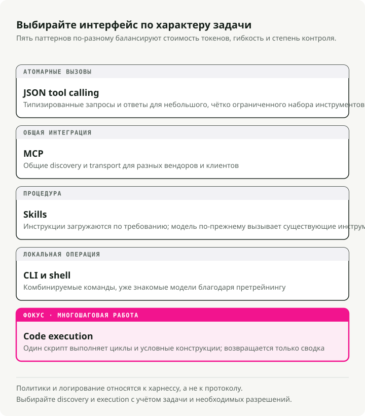
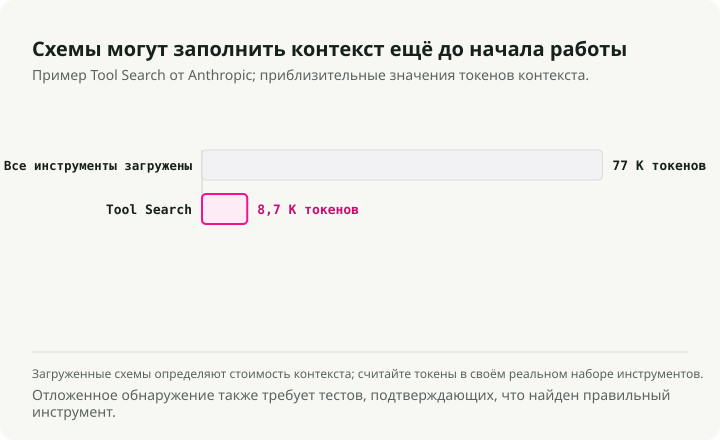
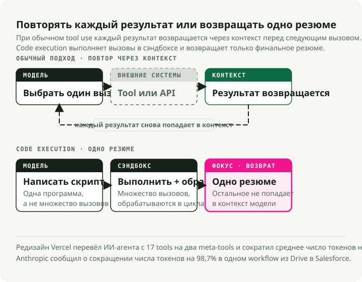
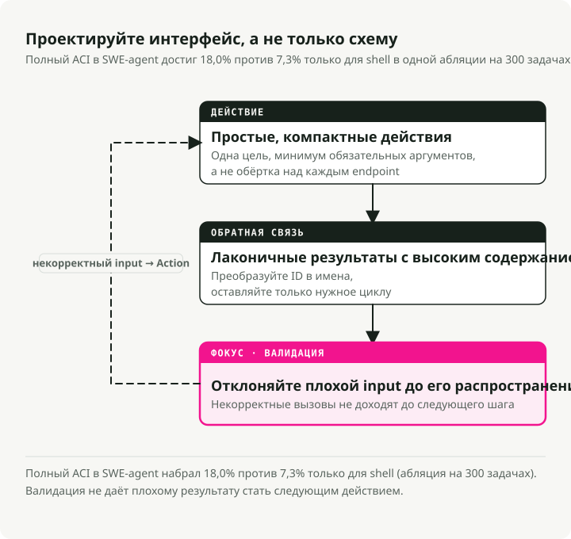

Автоматический перевод
Эта статья была автоматически переведена с оригинальной английской версии.
Использование инструментов AI-агентами в 2026 году: MCP, CLI, Skills и выполнение кода
Часть 3 серии Engineering the Agentic Stack
Часть 1 была посвящена reasoning loops, Часть 2 — памяти. Этот пост про использование инструментов AI-агентами: как агенты взаимодействуют с внешним миром и почему дизайн инструментов важнее, чем думает большинство команд.
История с инструментами изменилась в 2025–2026 годах. MCP стал фактическим стандартом для внешних сервисов, но production-команды постоянно упираются в его пробелы по безопасности и избыточные token-расходы. Другой подход, который быстро набирает популярность, — агенты, которые пишут и исполняют код вместо вызова инструментов, определённых через JSON. Anthropic зафиксировала снижение числа токенов на 98.7% на репрезентативном workflow, а в статье CodeAct сообщается о росте успешности задач на 20%.
В этом посте сравниваются JSON tool calling, MCP, Skills, CLI-инструменты и выполнение кода, а затем они соотносятся с принципами дизайна Agent-Computer Interface (ACI), которые я применяю в Market Analyst Agent.
Кратко: существует пять модальностей инструментов для AI-агентов, и у каждой есть своя оптимальная область применения. Практический стек 2026 года: Skills для экспертизы, CLI по умолчанию, MCP для внешних сервисов, выполнение кода для многошаговой оркестрации. Принципы дизайна ACI из SWE-agent применимы ко всем из них.
Пять способов, которыми AI-агенты используют инструменты
В Части 1 я показал, как reasoning loops у AI-агентов определяют, как думать. Модальности инструментов определяют, как действовать. Сейчас существует пять разных подходов, и у каждого свои компромиссы по стоимости в токенах, гибкости и безопасности.

1. JSON Tool Calling — базовый вариант
Изначальный паттерн: вы задаёте схемы инструментов в JSON, LLM выдаёт структурированные вызовы функций, ваш код их исполняет. Подход хорошо изучен и нормально работает для небольших наборов инструментов.
# Traditional tool definition — each tool consumes ~550-1,400 tokens (Apideck benchmark)
tools = [
{
"name": "get_stock_price",
"description": "Get the current stock price for a ticker symbol",
"input_schema": {
"type": "object",
"properties": {
"ticker": {"type": "string", "description": "Stock ticker (e.g., NVDA)"}
},
"required": ["ticker"]
}
}
]
При 5–10 инструментах это нормально. Проблема начинается с масштабирования: каждое определение инструмента стоит 550-1,400 токенов. При 20 инструментах вы тратите 15–25K токенов ещё до того, как агент вообще начнёт рассуждать.
2. MCP — универсальный стандарт (с оговорками)
Model Context Protocol — стандарт, к которому сошлось большинство вендоров. Anthropic передала его Linux Foundation под эгидой Agentic AI Foundation (AAIF) в декабре 2025 года; OpenAI и Block стали соучредителями, а Google, Microsoft и AWS — platinum-участниками. OpenAI добавила поддержку MCP в Responses API. Сейчас существует 10,000+ активных MCP-серверов и 97M+ ежемесячных загрузок SDK.
Где MCP выигрывает: кросс-вендорная интеграция с SaaS (Figma, Notion, Salesforce), enterprise-governance с audit trail, сервисы без CLI-эквивалентов и среды, где нужна OAuth-оркестрация. Для таких сценариев MCP — очевидный выбор.
Но в production всё сложнее, чем показывают заголовки.
Первая проблема — поверхность атаки. Vulnerable MCP Project отслеживает 50 уязвимостей в MCP-серверах, из них 13 имеют уровень Critical; в исследование внесли вклад 32 security-исследователя. Классы атак включают prompt injection, ошибки валидации ввода, пробелы в аутентификации и сетевые уязвимости. Первый реальный вредоносный MCP-сервер появился в сентябре 2025 года: пакет под названием postmark-mcp добавлял скрытую копию ко всем исходящим письмам на адрес атакующего, затронув, по оценкам, 300–500 организаций до обнаружения.
Tool poisoning — класс атак, который беспокоит меня больше всего. Invariant Labs показала, что отравленные MCP-инструменты могут эксфильтрировать данные, даже если их никогда не вызывали. Модели достаточно просто прочитать метаданные инструмента, чтобы атака сработала. Бенчмарк MCPTox, где тестировались 20 LLM-агентов против 45 реальных MCP-серверов, показал успешность атак до 72.8%.
Операционная проблема — token overhead. Одна команда, запустившая MCP-серверы для GitHub, Slack и Sentry (в сумме ~40 инструментов), обнаружила, что до первого пользовательского запроса в контекст уже внедряется 55,000 токенов схем. Другая сообщила, что 143,000 из 200,000 доступных токенов (72%) уходят только на определения инструментов.

Митигации работают, но лишь подтверждают базовую проблему. Tool Search Tool от Anthropic снижает schema overhead на 85%. Динамическая загрузка инструментов (3–5 релевантных инструментов на задачу) даёт снижение на 96%. Всё это — обходные пути для протокола, который изначально не проектировался с учётом жёстких token budget.
3. Skills (SKILL.md) — экспертиза, а не исполнение
Конец 2025 года принёс стандартизацию agent skills как открытого формата (запущен в октябре 2025 года, опубликован как открытый стандарт в декабре 2025 года). Различие здесь принципиально: инструменты дают возможности (что агенты могут делать), а skills дают экспертизу (что агенты знают о том, как выполнять сложные задачи).
Стандарт SKILL.md определяет skill как markdown-файл с YAML frontmatter:
---
name: deploy
description: Deploy the application to production
argument-hint: "[environment]"
user-invocable: true
---
Deploy the application to the $0 environment (default: staging).
Steps:
1. Run the test suite
2. Build the production bundle
3. Deploy using the deploy script
4. Verify the deployment health check
Skills используют progressive disclosure: при старте загружаются только метаданные (~100 токенов YAML frontmatter), а полные инструкции подгружаются только при активации skill. Сравните это с MCP, где ~40 инструментов по типичным сервисам потребляют ~55,000 токенов ещё до начала reasoning. По состоянию на март 2026 года кроссплатформенная поддержка включает Claude Code, OpenAI Codex CLI, Cursor, GitHub Copilot, Gemini CLI, Goose, Windsurf и Roo Code — этот тренд Victor Dibia разбирает в своём анализе смещения от tools обратно к code-driven действиям агентов.
Когда skills выигрывают: перенос доменной экспертизы, сложные многошаговые процедуры, повторяющиеся workflow вроде database migrations или payment integrations, а также любые задачи, где агенту нужно знать как, а не просто что.
4. CLI/Bash — ренессанс Unix
Unix terminal оказался самым token-efficient интерфейсом для агентов. Математика здесь односторонняя: manifest CLI-инструмента стоит около 100 токенов, тогда как эквивалентные схемы MCP-сервера потребляют 50,000+ токенов. Это разница в 4-32x по измерениям Scalekit на 75 benchmark-запусках (32x для задач вроде определения языка репозитория и поиска лицензии).
Модели изначально умеют работать с CLI. В их обучающих данных есть миллиарды terminal interactions из Stack Overflow, GitHub-репозиториев и документации. Они нативно понимают git, docker, kubectl, gh, curl и jq без каких-либо schema definitions.
В гайде Ugo Enyioha \"Writing CLI Tools That AI Agents Actually Want to Use\" сформулированы восемь правил дизайна:
- Структурированный вывод обязателен — поддерживайте
--json - Коды выхода — это control flow — используйте разные коды для разных типов ошибок
- Команды должны быть идемпотентными
- Самодокументируемый
--helpс реалистичными примерами - Проектируйте для composability —
--quietдля голых значений, поддержка stdin - Предоставляйте флаги
--dry-runи--yes - Поддерживайте introspection версии
- Обрабатывайте auth через переменные окружения
Компромиссы здесь реальны. У CLI нет type safety MCP, встроенной OAuth-оркестрации, discovery инструментов и audit trail. Паттерн, к которому, как я вижу, приходит большинство команд: CLI по умолчанию для разработки и локальных операций, MCP — для интеграции с внешними сервисами и enterprise-governance.
5. Выполнение кода — большой сдвиг
Это изменение в агентных инструментах я считаю наиболее важным. Вместо того чтобы LLM генерировала структурированный JSON для поочерёдного вызова заранее определённых функций, агент пишет полноценный Python- или bash-скрипт, который вызывает несколько инструментов, обрабатывает результаты через циклы и conditionals и возвращает в контекст модели только финальные summary.
Anthropic формализовала этот подход как Programmatic Tool Calling (PTC), который теперь доступен в GA в Claude API. Академическая база — статья CodeAct (Wang et al., ICML 2024), где тестирование на 17 LLM показало, что code actions дают до 20% более высокую успешность задач и на 30% меньше шагов, чем JSON-альтернативы.

Production-данные:
-
Vercel пересобрала своего d0 text-to-SQL агента, убрав 80% инструментов (с 15 до 2:
ExecuteCommandиExecuteSQL). Успешность задач выросла с 80% до 100%, время выполнения сократилось в 3.5 раза, а расход токенов упал на 40%. Их формулировка: \"The best agents might be the ones with the fewest tools.\" -
Cloudflare разработала \"Code Mode,\", позволяющий агентам писать TypeScript для вызова их API вместо определения схем инструментов, что снижает контекстные накладные расходы. Их логика: \"LLMs have an enormous amount of real-world TypeScript in their training set, but only a small set of contrived examples of tool calls.\"
Вот паттерн из документации Anthropic по PTC. Традиционный tool calling для анализа расходов требует 20+ отдельных inference-проходов, по одному на каждого члена команды, и все промежуточные данные проходят через контекст. Workflow, потреблявший ~150,000 токенов при прямом tool calling, был переimplemented примерно на ~2,000 токенов, то есть дал снижение на 98.7%. При выполнении кода агент пишет один скрипт:
# Agent generates this code, executes in sandbox
import json
members = get_team_members("engineering")
over_budget = []
for m in members:
expenses = get_expenses(m["id"], "Q3")
total = sum(e["amount"] for e in expenses)
if total > 5000:
custom = get_custom_budget(m["id"])
limit = custom["limit"] if custom else 5000
if total > limit:
over_budget.append({"name": m["name"], "spent": total, "limit": limit})
# Only this final summary returns to the LLM context
print(json.dumps(over_budget))
LLM видит только финальный JSON summary, а не тысячи строк расходов, обработанных в sandbox. Одновременно улучшаются token efficiency, нативная composability (циклы и conditionals достаются бесплатно), реальная обработка ошибок (try/except вместо рассуждений об ошибках на естественном языке) и приватность (чувствительные данные остаются в sandbox).
Когда JSON tool calling всё ещё имеет смысл: одиночные атомарные операции, среды без sandbox-инфраструктуры, более слабые модели с плохой генерацией кода или требования аудита, где нужно логировать каждый отдельный вызов инструмента.
Таблица сравнения tool calling для AI-агентов
| Dimension | JSON Tool Calling | MCP | Skills (SKILL.md) | CLI/Bash | Code Execution (PTC) |
|---|---|---|---|---|---|
| Лучше всего для | Простых одиночных действий | Кросс-вендорного SaaS | Доменной экспертизы | Dev-workflow, локальных ops | Многошаговой оркестрации |
| Token overhead | Средний (схемы на запрос) | Очень высокий (550-1,400/инстр.) | Очень низкий (~100 токенов) | Почти нулевой | Низкий (2 meta-tools) |
| Успешность задач | Базовый уровень | Близко к базовому | N/A (слой экспертизы) | Выше для CLI-native задач | +20% к базовому уровню |
| Composability | Низкая (последовательно) | Низкая (последовательно) | Высокая (процедурные знания) | Высокая (pipes, chaining) | Очень высокая (нативный код) |
| Поверхность атаки | Умеренная | Высокая (50+ CVE) | Низкая (на уровне prompt) | Высокая (shell access) | Высокая (нужен sandboxing) |
| Сложность настройки | Низкая | Средняя (деплой серверов) | Очень низкая (markdown) | Очень низкая (готовые CLI) | Средняя (sandbox infra) |
| Latency на действие | 1 inference/вызов | 1 inference + transport | 0 (инъекция в контекст) | 1 inference/вызов | 1 проход для N вызовов |
| Отладка | Хорошая (структурированный I/O) | Средняя (transport layer) | Хорошая (читаемый markdown) | Отличная (всё видно) | Хорошая (читаемый код) |
Под composability здесь понимается, насколько легко несколько операций объединяются в более крупный workflow. Низкая означает, что каждый вызов инструмента требует отдельного round-trip к LLM; высокая — что модальность нативно поддерживает связывание результатов (Unix pipes, переменные в коде, процедурные шаги).
Agent-Computer Interface (ACI) для инструментов AI-агентов
Термин \"Agent-Computer Interface\" (ACI) ввели John Yang, Carlos E. Jimenez и коллеги из Princeton в своей статье SWE-agent (NeurIPS 2024). Идея проста: так же как людям помогают хорошо спроектированные интерфейсы (HCI), LM-агенты — это \"a new category of end users with their own needs and abilities, and would benefit from specially-built interfaces.\"
Это подтвердили ablation-результаты. SWE-agent с полным ACI достиг 18.0% на SWE-bench Lite против 7.3% при использовании только стандартного Linux shell — прирост на 10.7 процентного пункта исключительно за счёт дизайна интерфейса. Один только guardrail с linting дал 3 процентных пункта: у 51.7% правок агента была хотя бы одна ошибка, пойманная линтером до того, как она успела распространиться дальше.

Anthropic приняла ACI как базовую концепцию в своём гайде \"Building Effective Agents\", указав его как один из трёх ключевых принципов: \"Carefully craft your agent-computer interface through thorough tool documentation and testing.\" Их практический совет: \"One rule of thumb is to think about how much effort goes into human-computer interfaces, and plan to invest just as much effort in creating good agent-computer interfaces.\"
Четыре принципа на практике
1. Действия должны быть простыми и понятными. Самая распространённая ошибка — оборачивать API endpoints один-в-один. Вместо list_users, list_events, create_event реализуйте schedule_event, который за один вызов находит доступность и планирует встречу. Вместо read_logs реализуйте search_logs, который возвращает только релевантные строки с контекстом.
2. Действия должны быть компактными и эффективными. Консолидируйте важные операции в как можно меньшее число действий. В Market Analyst Agent я объединяю получение цены с базовыми метриками в один инструмент get_stock_snapshot вместо отдельных вызовов для цены, объёма, market cap и PE ratio.
3. Обратная связь от окружения должна быть информативной, но краткой. Не возвращайте сырой HTML или полные API payload. Преобразуйте криптичные ID в семантические имена. Тесты Anthropic показали, что добавление enum response_format, позволяющего агентам запрашивать краткие (~72 токена) или подробные (~206 токенов) ответы (разница в стоимости 3x), заметно улучшило производительность в реальных условиях.
4. Guardrails должны снижать распространение ошибок. Автоматическое обнаружение ошибок помогает агентам быстро распознавать и исправлять проблемы. В SWE-agent кастомный file editor со встроенным linting автоматически отклоняет синтаксические ошибки, перехватывая 51.7% ошибок редактирования до того, как они накапливаются. Я применяю тот же принцип в Market Analyst Agent, валидируя аргументы инструментов через схемы Pydantic перед выполнением:
from pydantic import BaseModel, Field, field_validator
class StockQuery(BaseModel):
"""Validated input for stock queries.
Pydantic catches malformed tickers before the API call,
preventing error propagation through the reasoning loop.
"""
ticker: str = Field(description="Stock ticker symbol (e.g., NVDA)")
period: str = Field(default="1mo", description="Time period: 1d, 5d, 1mo, 3mo, 1y")
@field_validator("ticker")
@classmethod
def validate_ticker(cls, v: str) -> str:
v = v.upper().strip()
if not v.isalpha() or len(v) > 5:
raise ValueError(f"Invalid ticker format: {v}")
return v
@field_validator("period")
@classmethod
def validate_period(cls, v: str) -> str:
valid = {"1d", "5d", "1mo", "3mo", "6mo", "1y", "5y"}
if v not in valid:
raise ValueError(f"Invalid period: {v}. Must be one of {valid}")
return v
Рабочие паттерны дизайна инструментов для AI-агентов
В гайде Anthropic \"Writing effective tools for agents\" инструменты описываются как \"a new kind of software reflecting a contract between deterministic systems and non-deterministic agents.\" Вот паттерны, которые к настоящему моменту выкристаллизовались из production-практики.
Рассматривайте описания инструментов как prompt engineering
Описания должны быть длиной минимум 3-4+ предложения и покрывать, когда использовать инструмент, какие параметры обязательные, а какие опциональные, формат вывода и edge cases. Namespacing с префиксами (asana_search, jira_search) даёт \"non-trivial effects\" на точность выбора инструментов. В экспериментах Anthropic описания инструментов, оптимизированные под Claude, превосходили те, что писали эксперты-люди.
# Bad: vague, no context for when to use
tools = [{
"name": "search",
"description": "Search for items",
}]
# Good: specific, with input examples and edge cases
tools = [{
"name": "stock_search_news",
"description": (
"Search for recent news articles about a specific stock or company. "
"Use this tool when the user asks about recent events, earnings, "
"announcements, or market-moving news for a specific ticker. "
"Returns up to 10 articles sorted by relevance. "
"For broad market news (not ticker-specific), use market_overview instead."
),
"input_schema": {
"type": "object",
"properties": {
"query": {
"type": "string",
"description": "Search query. Examples: 'NVDA earnings Q3 2025', 'Tesla delivery numbers'"
},
"max_results": {
"type": "integer",
"description": "Max articles to return (1-10, default 5)",
"default": 5
}
},
"required": ["query"]
}
}]
Внутреннее тестирование показало, что примеры ввода (поле input_examples) существенно повышают точность при сложной обработке параметров.
Возвращайте высокосигнальный, machine-readable output
Избегайте низкоуровневых идентификаторов (uuid, mime_type). Преобразуйте неочевидные ID в семантические имена. Структурируйте ответ так, чтобы агент мог рассуждать по нему без разбора boilerplate:
# Bad: raw API response dumped to agent
def get_stock_price(ticker: str) -> dict:
response = api.get(f"/v1/quotes/{ticker}")
return response.json() # 500+ tokens of nested JSON
# Good: high-signal summary the agent can immediately reason about
def get_stock_price(ticker: str) -> dict:
data = api.get(f"/v1/quotes/{ticker}").json()
return {
"ticker": ticker,
"price": data["regularMarketPrice"],
"change_pct": round(data["regularMarketChangePercent"], 2),
"volume": data["regularMarketVolume"],
"market_cap_b": round(data["marketCap"] / 1e9, 1),
"pe_ratio": data.get("trailingPE"),
"summary": f"{ticker} at ${data['regularMarketPrice']:.2f} "
f"({'up' if data['regularMarketChangePercent'] > 0 else 'down'} "
f"{abs(data['regularMarketChangePercent']):.1f}%)"
}
Проектируйте обработку ошибок на устойчивость
Паттерн, который выдержал проверку production, — это четыре слоя fault tolerance:
- Retry с exponential backoff для временных ошибок
- Цепочки model fallback на случай отказа провайдера
- Маршрутизация по классификации ошибок — временные ошибки повторяются, ошибки, которые LLM может исправить, возвращаются агенту с контекстом, ошибки, требующие участия человека, эскалируются
- Восстановление из checkpoint для переживания падений
Команды сообщают о снижении невосстановимых сбоев с 23% до менее 2% при использовании этого четырёхслойного подхода, как задокументировано в паттернах tool resilience от Anthropic.
from tenacity import retry, stop_after_attempt, wait_exponential
@retry(
stop=stop_after_attempt(3),
wait=wait_exponential(multiplier=1, min=2, max=10),
)
def call_stock_api(ticker: str) -> dict:
"""Fetch stock data with automatic retry on transient failures.
Layer 1: Exponential backoff handles rate limits and network blips.
If all retries fail, the error propagates to the agent with
enough context to decide whether to try a different approach.
"""
response = httpx.get(
f"https://api.example.com/v1/quotes/{ticker}",
timeout=10.0,
)
response.raise_for_status()
return response.json()
Применение этих паттернов: Market Analyst Agent
Покажу, как эти принципы сходятся вместе в Market Analyst Agent из Части 1.
Консолидация инструментов
В статье из Части 1 показана упрощённая поверхность из 5 инструментов после этого рефакторинга. До этой очистки исходный дизайн содержал 10+ инструментов: get_stock_price, get_company_metrics, get_market_cap, get_pe_ratio, get_volume и так далее. Каждый был тонкой обёрткой над одним API endpoint. Агенту приходилось рассуждать, какую комбинацию вызывать для каждого запроса.
Я сконсолидировал их в 5 высокоуровневых инструментов, следуя принципу ACI о компактных и эффективных действиях:
| До (10+ инструментов) | После (5 инструментов) | Почему |
|---|---|---|
get_stock_price + get_company_metrics + get_pe_ratio |
get_stock_snapshot |
Один вызов возвращает всё нужное для базового анализа |
get_price_history + get_volume_history |
get_price_history |
Объединено с настраиваемым периодом и индикаторами |
search_news + search_press_releases |
search_news |
Единый поиск с фильтрацией по источнику |
search_competitors + get_sector_data |
search_competitors |
Возвращает конкурентов с относительными метриками |
get_financials + get_balance_sheet + get_cash_flow |
get_financials |
Унифицировано через параметр statement_type |
Это заметно сократило schema overhead инструментов и сделало выбор инструментов агентом более надёжным, потому что неоднозначных вариантов стало меньше.
Структурированные результаты инструментов
Каждый инструмент в Market Analyst Agent возвращает ответ, валидированный через Pydantic. Это применяет принцип guardrails из ACI на границе инструмента:
class StockSnapshot(BaseModel):
"""Structured tool response — the agent never sees raw API noise."""
ticker: str
price: float
change_pct: float
volume: int
market_cap_b: float
pe_ratio: float | None
summary: str # Human-readable one-liner for direct use in reports
class NewsResult(BaseModel):
"""Each news item is pre-processed for agent consumption."""
headline: str
source: str
date: str
relevance_score: float # Pre-ranked so the agent doesn't waste tokens sorting
key_points: list[str] # Extracted by the tool, not the agent
Поле summary здесь важнее всего. Оно даёт агенту готовую строку, которую можно сразу включать в отчёт без дополнительной обработки. key_points в NewsResult извлекаются на стороне сервера, избавляя агента от траты inference-токенов на парсинг тел статей.
Компромиссы и практические соображения
Помимо специфических caveat для каждой модальности выше, выбор определяют ещё несколько сквозных факторов:
-
Операционная стоимость различается по измерениям. Выполнение кода экономит токены, но добавляет cold-start latency sandbox. MCP экономит время разработки для SaaS-интеграций, но добавляет накладные расходы на деплой серверов. CLI почти бесплатен на старте, но его сложнее управлять в большом масштабе. Оптимизируйте под своё реальное узкое место: token cost, latency или операционную сложность.
-
Навыки команды имеют значение. Выполнение кода предполагает, что ваши агенты (и модели под ними) умеют надёжно генерировать Python или TypeScript. CLI предполагает familiarity с Unix-conventions. MCP требует понимания transport protocols и OAuth flows. Подбирайте модальность под сильные стороны команды.
-
С консолидацией инструментов можно переборщить. Если слить всё в один mega-tool, пространство параметров станет слишком сложным для агента. Для большинства агентных систем sweet spot — это 5–10 хорошо ограниченных инструментов.
-
Skills основаны на prompt, а не на жёстком enforcement. Skill — это инструкция, которой агент должен следовать, но не guardrail, которому он обязан подчиниться. Для критичных workflow комбинируйте skills с детерминированной валидацией.
-
Требования аудита влияют на выбор. Если нужен полный лог каждого вызова инструмента и его результата, MCP и JSON tool calling сразу дают структурированные audit trail. Выполнение кода создаёт скрипт и его вывод, что полезно, но сложнее разложить на отдельные действия для compliance-отчётности.
Куда движется эргономика инструментов
Стоит отслеживать три направления.
Первое — tool RAG для масштабирования. Когда наборы инструментов растут до сотен и тысяч, точность наивного выбора инструментов падает до 13.62%. В статье RAG-MCP показано, что применение retrieval-augmented generation к выбору инструментов (индексация описаний инструментов в vector database и извлечение только релевантных инструментов для каждого запроса) даёт 43.13% точности, то есть рост в 3.2 раза, и одновременно сокращает prompt tokens примерно на 50%.
Второе — агенты, создающие собственные инструменты. Фреймворк LATM (\"LLMs As Tool Makers\") задал двухфазную парадигму, в которой мощная LLM создаёт переиспользуемые Python-функции, а облегчённая LLM затем их использует. ToolMaker (ACL 2025) автономно преобразует GitHub-репозитории в совместимые с LLM инструменты с успешностью 80%. Фронтир смещается от использования инструментов к их созданию, а затем к управлению библиотеками инструментов.
Третье — двухпротокольный стек A2A + MCP. Agent2Agent Protocol (A2A) от Google решает то, чего не умеет MCP: коммуникацию агент-агент. MCP отвечает за интеграцию агент-инструмент; A2A — за обнаружение агентов, согласование и делегирование задач. Итоговая формула: build with your framework, equip with MCP, communicate with A2A.
Ключевые выводы
-
У использования инструментов есть пять разных модальностей, и у каждой — своя явная оптимальная область применения. Не выбирайте MCP по умолчанию для всего подряд; подбирайте модальность под задачу.
-
Замена JSON tool calling на выполнение кода — крупнейший сдвиг в агентных инструментах. PTC от Anthropic, сокращение числа инструментов у Vercel и Code Mode от Cloudflare сходятся в одной идее: пусть агенты пишут код вместо вызова схем.
-
Token overhead — главное операционное ограничение. 55K+ токенов для ~40 MCP-инструментов против ~100 токенов для CLI-manifest — это не маргинальная разница. Это разница между тем, что агент имеет 65% или 95% своего контекста на reasoning.
-
Принципы дизайна ACI важнее самого протокола. SWE-agent показал, что один только дизайн интерфейса дал 10.7 процентного пункта на бенчмарках. Простые действия, краткая обратная связь и встроенные guardrails работают независимо от того, используете ли вы MCP, CLI или выполнение кода.
-
Агрессивно консолидируйте инструменты. Пять хорошо спроектированных инструментов работают лучше двадцати гранулярных. Каждый инструмент — это выбор, который вы заставляете делать модель, поэтому сокращайте пространство решений.
-
Рассматривайте описания инструментов как prompt engineering. Примеры ввода существенно повышают точность. Описания, оптимизированные под Claude, превосходят написанные экспертами людьми. Вкладывайте в UX инструментов столько же усилий, сколько вложили бы в UX для человека.
-
Практический стек 2026 года — это Skills + CLI + MCP + Code Execution, разложенные по use case. Skills для экспертизы, CLI для локальных операций, MCP для внешних сервисов, выполнение кода для многошаговой оркестрации.
Что дальше
В Части 4, AI Agent Security in 2026, я разбираю policy-слой вокруг агентов: как предотвращать destructive actions, hallucinated tool calls и утечки чувствительных данных через ответы инструментов.
Ссылки
Статьи
- Executable Code Actions Elicit Better LLM Agents (CodeAct) — Wang et al., ICML 2024 — действия на основе кода дают на 20% более высокую успешность задач, чем JSON
- SWE-agent: Agent-Computer Interfaces Enable Automated Software Engineering — Yang, Jimenez et al., NeurIPS 2024 — принципы дизайна ACI и оценка на SWE-bench (18.0% против 7.3%, 10.7 п.п. за счёт дизайна интерфейса)
- RAG-MCP: Mitigating Prompt Bloat in LLM Tool Selection — Tool RAG, повышающий точность выбора с 13.62% до 43.13%
- LLMs As Tool Makers (LATM) — Cai et al., 2023 — двухфазная парадигма создания инструментов агентами
- ToolMaker: LLM Agents Making Agent Tools — Wolflein et al., ACL 2025 — 80% успешности преобразования репозиториев в инструменты
- MCPTox: A Comprehensive MCP Toxicity Benchmark — 72.8% успешности атак на 20 LLM-агентах и 45 MCP-серверах
Anthropic Engineering
- Advanced Tool Use / Programmatic Tool Calling — Tool Search (снижение schema overhead на 85%), PTC и примеры использования инструментов
- Code Execution with MCP — снижение числа токенов на 98.7% (со 150K до 2K токенов) за счёт code-based оркестрации инструментов
- Writing Effective Tools for Agents — engineering описаний инструментов; примеры ввода повышают точность; enum response_format (72 против 206 токенов)
- Building Effective Agents — ACI как фундаментальный принцип дизайна
Industrial case studies
- Vercel: We Removed 80% of Our Agent's Tools — с 15 до 2 инструментов, успешность с 80% до 100%, в 3.5 раза быстрее, на 40% меньше токенов
- Cloudflare: Code Mode — вызовы API через TypeScript вместо схем инструментов
- Apideck: MCP Server Eating Your Context Window — 550-1,400 токенов/инструмент, 55K токенов на ~40 MCP-инструментов, занято 143K/200K контекста
- Scalekit: MCP vs CLI Token Benchmark — token overhead MCP выше CLI в 4-32x на 75 benchmark-запусках
Безопасность
- Vulnerable MCP Project — 50 отслеживаемых уязвимостей, 13 Critical, от 32 исследователей
- AuthZed: Timeline of MCP Breaches — 9 крупных security-инцидентов MCP (апрель-октябрь 2025)
- Invariant Labs: MCP Tool Poisoning Attacks — tool poisoning, rug pulls и cross-origin escalation
- Pivot Point Security: MCP Security Analysis — 43% command injection, 43% flaws в OAuth-аутентификации
Дизайн CLI
- Writing CLI Tools That AI Agents Actually Want to Use — Ugo Enyioha — восемь правил дизайна CLI, удобных для агентов
Демо-проект
- Market Analyst Agent — полная реализация с консолидацией инструментов и паттернами ACI
Полный код Market Analyst Agent, включая дизайны инструментов, описанные в этом посте, доступен на GitHub.
Серия: Engineering the Agentic Stack
- Часть 1: AI Agent Reasoning Loops in 2026 — ReAct, ReWOO и Plan-and-Execute
- Часть 2: AI Agent Memory Architecture in 2026 — checkpoints, vector stores и память документов
- Часть 3: Использование инструментов AI-агентами в 2026 году (этот пост)
- Часть 4: AI Agent Security in 2026 — guardrails, permissions, sandboxes, HITL и MCP scoping
- Часть 5: Long-Running AI Agent Runtime in 2026 — sessions, sandboxes, checkpoints, harnesses и варианты deployment